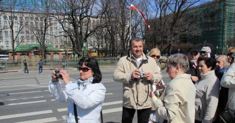
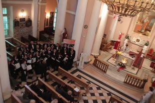
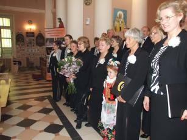
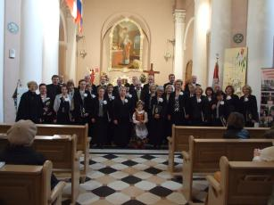
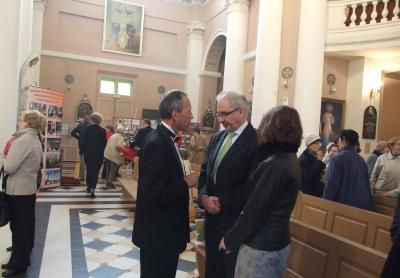

A tymczasem w Cameracie...
.
2012-05-02
Wstajemy późno, bo nie możemy być zmęczeni na koncercie. Schodzimy na śniadanie i po ruszamy zwiedzać , ale w najbliższej okolicy bo dalej nie zdążymy przed mszą.
Koncert odbędzie się w Kościele polskim p.w. Św. Stanisława Biskupa i Męczennika, poprzedzony Mszą Świętą, w przypadający Dzień Polonii i Polaków za Granicą. Oprawiamy muzycznie mszę.

Po mszy Koncert . Przechodzimy przed ołtarz i zaczynamy. Śpiewa chór, śpiewa pani dyrygent Ave Maria. Koncert jest piękny. Bardzo podoba się słuchaczom.
Na koniec kwiaty, pamiątki, podziękowania no i łezka w oku jak zawsze.
 
Jeszcze chwila rozmów.


© Stowarzyszenie Muzyczne Chór Camerata Wieliczka